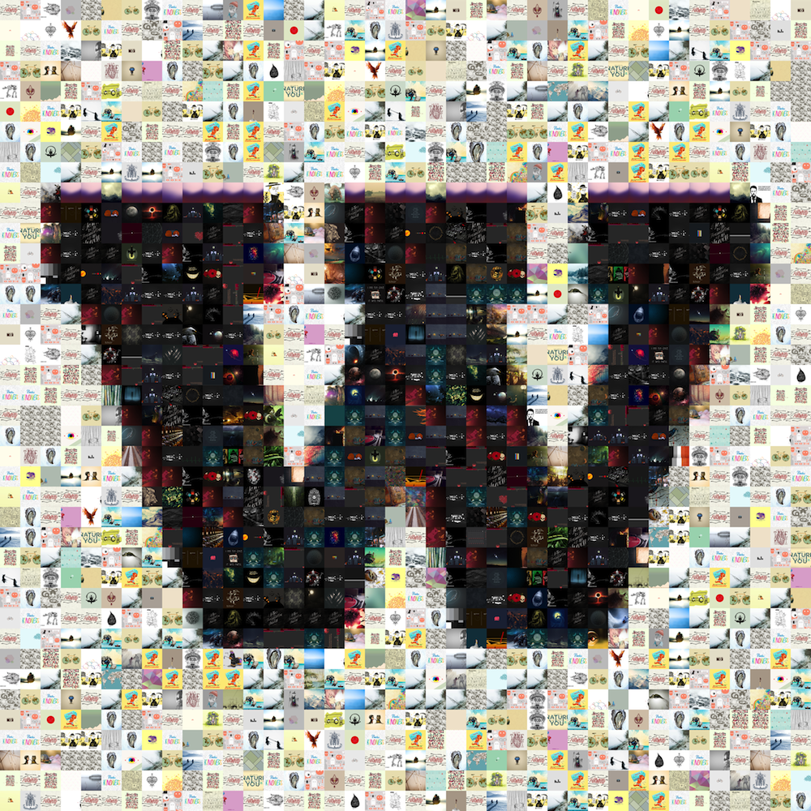
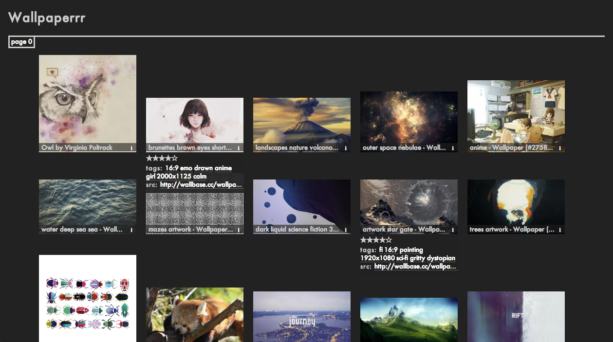
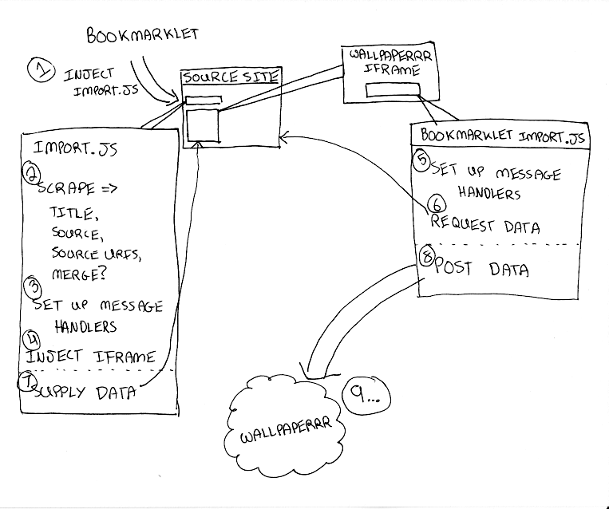
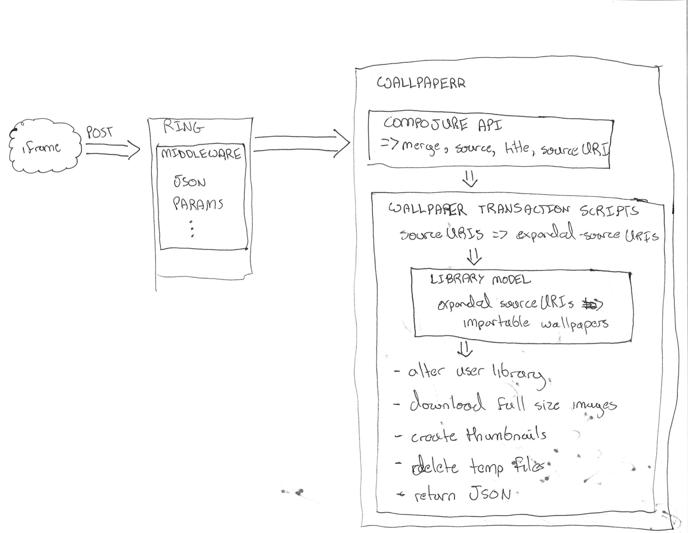

The Perils of Cross-Domain, Base64-Encoded, Clojure-Enabled Image Importing
Table of Contents
- 1 Hello Monetate, I'm Tim
- 2 Relay Network
- 3 I Have a Passion …
- 4 … and a Problem
- 5 Wallpaperrr
- 6 Context
- 7
POSTan Image to the server - 8 A better
POSTbody? - 9 Obtaining the JSON
- 10 Using the JSON
- 10.1 Basic Notes
- 10.2 The Back End Process
- 10.3 The Back End Process
- 10.4 A Ring App
- 10.5 A Compojure Route
- 10.6 The Transaction Script
- 10.6.1 Expanding the source URIs
- 10.6.2 source-uris->importable-wallpaper
- 10.6.3 source-uris->importable-wallpaper
- 10.6.4 source-uris->importable-wallpaper
- 10.6.5 source-uris->importable-wallpaper
- 10.6.6 Add to the user's library
- 10.6.7 Download Each source URI
- 10.6.8 Thumbnailization
- 10.6.9 Thumbnailization
- 10.6.10 Delete the Temporary Files
- 10.7 Send the Response
- 11 But what about Base64?
- 12 Setting a URLConnection's User-Agent string
- 13 Further experiments
- 14 In Conclusion
- 15 Thanks! Questions?
- 16
1 Hello Monetate, I'm Tim
2 Relay Network
3 I Have a Passion …

4 … and a Problem
5 Wallpaperrr
A community of curators passionate about their wallpaper.

5.1 What is Wallpaperrr? notes
- A service intended to make it dead simple to import images to a library. Think Instapaper or Evernote.
- A manager for your wallpaper collection across all devices with differing screen resolutions and storage capacities.
- A suite of apps that allow you to deftly control how and where your wallpaper will appear.
- A community of people sharing their passion for ascetics together.
6 Context
- Import Strategy
- The Fox Is Black
- A Failed Experiment Which Taught Me Something Anyway
6.1 slide notes notes
- Import Strategy
- Always bothers me just a little that I'm hitting the server directly from mine.
- The client already has the data (at least on Wallbase). Why not distribute the load?
- Till now, 'ain't broke'
- The Fox Is Black
- Imports stopped working.
- 403s on the back end while the front-end worked just fine.
- Nothing obvious but there were a number of suspicious cookies and they had just done a redesign. I suspected lock out.
- A Failed Experiment
- Client-Side Image Downloading (Base64)
- Don't Be Evil (especially to Wallbase)
- Let's run an experiment!
7 POST an Image to the server
{
'title': 'foo',
'source': 'http://localhost/foo/',
'sourceUri': [
'http://localhost/foo_1920x1080.png',
'http://localhost/foo_1280x800.png'
]
}
7.1 notes notes
- Basic functionality is fine. Simply download each sourceUri on the back end
- Downsides
- Risk getting black-listed if you become popular
- Can be bad for the receiving server to be hit twice for the same image (wallbase.cc)
8 A better POST body?
{
'title': 'foo',
'source': 'http://localhost/foo/',
'sourceUri': [
'iVBORw0KGgoAAA…ggg==',
'aBGoAAt0wwgggg…axx=='
]
}
8.1 notes notes
- Advantages
- Get's me the image data directly from the client, which already has the data!
- Offloads downloading the image to the client, which saves me from getting black-listed
- Disadvantages
- Client's with low-bandwidth get hammered.
- Same Origin Policy!
9 Obtaining the JSON

9.1 The Process notes
- The Process
- Insert a script from Wallpaperrr into source site
- Scrape site for a title, source, and sourceUri(s)
onloadof the iframe, postgimme-datamessage towindow.parent- on
gimme-datamessage, postimport-datamessage back toevent.source- Actually, there's a fork here. We can either gather up the sourceURIs directly and do nothing else, or we can grab canvas data.
- on
import-datamessage,POSTimport-dataJSON back to server
9.2 The bookmarklet
var d=document, z=d.createElement('src'+'ipt'), b=d.body; if(!b) { throw (0); } z.setAttribute('src','http://localhost:3000/js/import.js'); b.appendChild(z);
9.2.1 our bootstraperr
- responsible for scraping the site
- as it's loaded into the window's DOM directly, it has access to it
- responsible for inserting the iframe it will be talking to
9.3 The Scraper
wallpaperrrScraper.scrapeSite = function () { var siteScraper; siteScraper = wallpaperrrScraper.matchingScraper(); return siteScraper ? siteScraper() : wallpaperrrScraper.defaultScraper(); };
9.3.1 Calling the scraper notes
- We provide a default scraper.
- A saner language would let me get a key out of a map with a default.
9.4 The Scraper
// man, I want underscore! wallpaperrrScraper.matchingScraper = function (sitePattern) { var siteMatch; for (siteMatch in wallpaperrrScraper.scraperDispatch) { if (wallpaperrrScraper.scraperDispatch .hasOwnProperty(siteMatch)) { if (document.baseURI.match(sitePattern)) { return wallpaperrrScraper.scraperDispatch[siteMatch]; } } } };
9.4.1 Selecting a scraper notes
- If I were using underscore, this'd be a lot easier. Que Sera, Sera.
- Remember to use
hasOwnPropertyif you're iterating over an object's properties. - Passing a string to
matchworks nicely and allows us to use regexps.
9.5 The Scraper
wallpaperrrScraper.scraperDispatch = {
"thefoxisblack.com": wallpaperrrScraper.thefoxisblackScraper,
"10.0.0.*": wallpaperrrScraper.localhostScraper,
};
9.5.1 The dispatch table notes
- Dispatch tables are nice! I picked them up from Relay.
- Anyone can assoc into them, potentially opening up extensions without code redeployment.
- This particular structure is nice because I can use regexps
9.6 The Scraper
wallpaperrrScraper.thefoxisblackScraper = function () { var aNodes, imageUrls, i; wallpaperrrScraper.title = document.querySelector('.post h2 a').textContent; aNodes = document.querySelectorAll('#wallpaper a'); imageUrls = []; for (i = 0; i < aNodes.length; i += 1) { imageUrls.push(aNodes[i].href); } wallpaperrrScraper.sourceUri = imageUrls; wallpaperrrScraper.merge = true; wallpaperrrScraper.insertIFrame(); };
9.6.1 The anatomy of a scraper notes
- I need 3 things: title, source, and the uris.
- Title is used as the title of the wallpaper in your library as well as the name of the wallpaper file on downloading it.
- Source is used to to link back to the source if others want to import that wallpaper.
- Source URIs are used to download the actual wallpapers. Alternatively to the source URIs, I could have a series of base64 strings.
9.7 Set Up Message Handlers
wallpaperrrScraper.messageHandlers = {
'gimme-import-data': wallpaperrrScraper.postImportDataMessage
};
9.8 Insert the iframe
wallpaperrrScraper.insertIFrame = function () { var i, isrc; i = document.createElement('iframe'); i.setAttribute('id', 'addFrame'); i.setAttribute('src', 'http://localhost:3000/bookmarklet-import'); i.setAttribute('style', 'position: fixed; …'); document.body.appendChild(i); i.focus(); };
9.8.1 Insert an iframe responsible for delivering that data to Wallpaperrr and then allowing the user to rate and tag it. notes
- We position it fixed at the top left so it looks nice and doesn't matter in what context it is inserted in.
- Love that
z-index
9.9 postMessage to site
wallpaperrrBookmarkletImport.doImport = function () { window.addEventListener( 'message', wallpaperrrBookmarkletImport.receiveMessage); window.parent.postMessage( { 'target': 'wallpaperSite', 'title': 'gimme-import-data' }, '*'); };
9.10 postMessage to site
wallpaperrrScraper.handleMessage = function (e) { if ('wallpaperSite' !== e.data.target) { return false; } if (messageHandlers[e.data.title]) { return messageHandlers[e.data.title](e, e.data.payload); } } window.addEventListener('message', handleMessage);
9.11 postMessage to Wallpaperrr
wallpaperrrScraper.postImportDataMessage = function (e) { var payload; payload = { 'title': self.title, 'sourceUri': self.sourceUri, 'source': self.source, 'merge': self.merge }; e.source.postMessage(payload, '*'); };
9.12 A fork
- URIs
- Base64
9.13 What we've got
{
'title': 'foo',
'source': 'http://localhost/foo/',
'sourceUri': [
'http://localhost/foo_1920x1080.png',
'http://localhost/foo_1280x800.png'
]
}
9.13.1 notes notes
- Basic functionality is fine. Simply download each sourceUri on the back end
- Downsides
- Risk getting black-listed if you become popular
- Can be bad for the receiving server to be hit twice for the same image (wallbase.cc)
9.14 POST Import Data (sans Base64)
wallpaperrrBookmarkletImport.imgsLoaded = function (importData) { wallpaperrrBookmarkletImport.importRequest() .send(JSON.stringify(importData)); Wallpaperrr.Functions .showElement( document.getElementById('importing-header') ); };
9.14.1 Nothing much to do here notes
10 Using the JSON
- A Compojure
POSTRoute - Some Ring
middleware - Some Clojure
multimethods - javax.imageio.ImageIO
- org.jdesktop.swingx.graphics.GraphicsUtilities
10.1 Basic Notes notes
- We support Zip Files, Straight URIS, and now Base64 Strings
- Middleware is cool (apparently comes from Rails?)
- Java's big. Has 'good' image libraries. Can throw out of memory errors when handling large files. This is something I think I'm going to pay someone else to do.
- Core
multimethods- Requests are handled by
multimethodsdispatching on theaccept-header - URIs are converted to
BufferedImage, dispatching on theclassof the input - Extensions are retrieved, dispatching on
class
- Requests are handled by
10.2 The Back End Process

10.2.1 The Back End Process notes
- The Process
POSTroute receives the request and destructures the JSON using middleware into function parameters.- The
POSTroute multimethod responsible for JSON accept headers takes over, passing the data through to the wallpaper model transaction script namespace - We expand the source uris, turning Zip files into multiple temporary files
- We transform the expanded source uris into importable wallpapers
- We alter the user's library ref, adding in each wallpaper.
- We save off the state of the library to the store
- We finally download each of the source-uris that made it through the import process into their correlated library-store-ids
- Then we thumbnail-ize them
- And finally delete any temporary files that were created (at this point only in the case of ZipFiles)
- Return the response map.
- We support Zip Files, Straight URIS, and now Base64 Strings
- Core
multimethods- Requests are handled by
multimethodsdispatching on theaccept-header - URIs are converted to
BufferedImage, dispatching on theclassof the input - Extensions are retrieved, dispatching on
class
- Requests are handled by
10.3 The Back End Process
;;; ["http://localhost:3000/user/tim.visher/…allbase_1920x1080.jpeg"] => {:wallpaper {:thumbnail-resolution {:extension "jpeg", :hash "f47818e3692786db6737a1b20236ce60", :width 1920, :height 1080}, :imported-at 1366813210080, :rating 0, :source "http://localhost:3000/…", :title "trees artwork - Wallpaper (#2756701) Wallbase", :tags #{"16:9" "1920x1080"}, :resolutions #{{:extension "jpeg", :hash "…", :width 1920, :height 1080}}} :source-uri #<File /var/folders/y7/…}
10.3.1 An importable wallpaper notes
- Title should be appropriate for being the name of a file on any file system.
- Resolutions and Aspect Ratios should be added as tags automatically
- We should have hashes of all the files so storage is shared across all users
- Multiple source uris for the same logical 'wallpaper' should be merged together. Others should be kept separate.
10.4 A Ring App
(def app (-> #'routes/main-routes … wrap-params … wrap-json-params))
10.4.1 Anatomy of a Ring App notes
- A Ring app is a function which takes a request in the form of a map and returns a map representing a response.
- This allows the use of higher order functions to construct 'middleware' which either transform the request or response on behalf of all inner routes.
10.5 A Compojure Route
(POST "/wallpaper" [merge title source sourceUri :as r] (let [{{{username :value} "username"} :cookies} r] (if username (letfn [(rep [s] (apply str (replace {\ , \+} s)))] (wallpaper-post-route r username title merge (rep source) (if (vector? sourceUri) (mapv rep sourceUri) sourceUri))) {:status 401})))
10.5.1 Anatomy of a Compojure route notes
- Compojure is a thin wrapper (started at around 200 SLOC) around constructing Ring handler functions.
- It provides a series of Macros which make it easy to declare what kind of request you're handling, the URL you expect to hit, and how you want to destructure the parameters that can come in.
10.6 The Transaction Script bigcode
(defn import-wallpaper ([username store-base merge? title source source-uris] (let [->importable-wallpaper (partial lib/import-uri->importable-wallpaper username title source) ->sanitized-title (fn [wallpaper] (lib/sanitize-title username (:title wallpaper) (:thumbnail-resolution wallpaper))) source-uris (expand-source-uris source-uris) importable-wallpapers (doall (filter identity (map ->importable-wallpaper source-uris)))] (if (not (empty? importable-wallpapers)) (let [source-uris (map :source-uri importable-wallpapers) wallpapers (map :wallpaper importable-wallpapers) sanitized-titles (map ->sanitized-title wallpapers) shortest-sanitized-title (first (sort-by count sanitized-title)) sanitized-title shortest-sanitized-title unique-titles (lib/unique-titles username sanitized-title) wallpapers (map #(assoc %1 :title %2) wallpapers unique-titles) wallpapers (if merge? [(reduce merge-wallpapers wallpapers)] wallpapers)] (dorun (map (partial lib/add-library-wallpaper! username) wallpapers)) (store/put :file-system store-base (str "libraries/" username ".clj") (pr-str (into #{} (deref (lib/new-library username))))) (let [resolutions (map (comp :thumbnail-resolution :wallpaper) importable-wallpapers) library-object-ids (map #(lib/wallpaper->library-object-id %1 "library" %2) (map :wallpaper importable-wallpapers) resolutions) thumbnail-object-ids (map #(lib/wallpaper->thumbnail-object-id %1 "thumbnails" %2) (map :wallpaper importable-wallpapers) resolutions)] (dorun (map #(with-open [is (io/input-stream %2)] (store/put :file-system store-base %1 is)) library-object-ids source-uris)) (dorun (map (partial store/create-thumbnail :file-system store-base) library-object-ids thumbnail-object-ids))) (dorun (map fs/delete (filter fs/exists? (filter string? source-uris)))) wallpapers) []))))
10.6.1 The Transaction Script notes
- An Overview
- Expand the source URIs
- Transform source URIs to importable wallpaper
- Add importable wallpapers to user lib
- Download each to global file-store
- Add thumbnails for each to global file-store
- Delete temporary files
- I'm creating functions in 4 different ways here. partial, comp, fn, and #(). Yeah, Clojure's functional alright.
- many are anonymous, 2 are named in the let.
- This is a common pattern for clojure code. Make a let that names each step of your algorithm so you can reference it later.
- Notice dorun/doall. This is because Clojure is lazily evaluated and when you get back to the front-end you won't be able to iterate over the lazyseq.
10.6.1 Expanding the source URIs
(defn expand-source-uris [source-uris] (loop [expanded-source-uris #{} [source-uri & source-uris] (filter importable-uri? source-uris)] (if source-uri (cond (zipfile? source-uri) (recur expanded-source-uris (into source-uris (zipfile-uri->temp-files source-uri))) (url-exists? source-uri) (recur (conj expanded-source-uris (source-uri->temp-file source-uri)) source-uris) :drop-it (recur expanded-source-uris source-uris)) expanded-source-uris)))
10.6.1.1 Expanding the source URIs notes
- The loop/recur form is the only tail-call optimized form in Clojure. Useful if you can't get your job done using standard list-comprehensions or fold operations
- Clojure supports destructuring binds. Sequences are destructured with vectors, and maps are destructured with maps.
- In the case of a zipfile, we want to drop the original uri and replace it with many temporary files.
10.6.2 source-uris->importable-wallpaper
(defn import-uri->importable-wallpaper ([username title source source-uri] (if-let [wallpaper (import-uri->wallpaper username title source source-uri)] {:wallpaper wallpaper :source-uri source-uri})) ([username source-uri] (let [title (store/base-name (.getPath (java.net.URI. source-uri)))] (import-uri->importable-wallpaper username title source-uri source-uri))))
10.6.3 source-uris->importable-wallpaper mediumcode
(defn import-uri->wallpaper [username title source source-uri] (if-let [image (wc/uri->image source-uri)] (let [wallpaper {:resolutions #{(assoc (:resolution image) :extension (:extension image))}} wallpaper (assoc wallpaper :tags #{(wc/resolution->string (first (:resolutions wallpaper)))}) wallpaper (assoc wallpaper :tags (->> (:resolutions wallpaper) (first ,,,) (wc/resolution->aspect-ratio ,,,) (wc/aspect-ratio->string ,,,) (conj (:tags wallpaper) ,,,) (into #{} ,,,))) wallpaper (assoc wallpaper :title (sanitize-title username title (first (:resolutions wallpaper)))) wallpaper (assoc wallpaper :source (try (.toString (java.net.URI. source)) (catch java.net.MalformedURLException e))) wallpaper (assoc wallpaper :rating 0) wallpaper (assoc wallpaper :imported-at (time-coerce/to-long (time/now))) wallpaper (assoc wallpaper :thumbnail-resolution (first (:resolutions wallpaper)))] wallpaper)))
10.6.4 source-uris->importable-wallpaper
wc/uri->image(defmulti java-image "Attempts to coerce it's argument to a BufferedImage" class) (defmethod java-image BufferedImage [^BufferedImage image] (GraphicsUtilities/toCompatibleImage image)) (defmethod java-image :default [input-streamable] (input-streamable->java-image input-streamable))
10.6.5 source-uris->importable-wallpaper
wc/uri->image(defmulti extensions "Attempts to get image format extensions for INPUT" class) (defmethod extensions :default [file] (with-open [is (io/input-stream file)] (->> (ImageIO/createImageInputStream is) (ImageIO/getImageReaders) (iterator-seq) (map #(.getFormatName %)) (map #(.toLowerCase %)) (into #{}))))
10.6.6 Add to the user's library
(dorun (map (partial lib/add-library-wallpaper! username) wallpapers)) (store/put :file-system store-base (str "libraries/" username ".clj") (pr-str (into #{} (deref (lib/new-library username)))))
10.6.7 Download Each source URI
(let [->thumbnail-resolution (comp :thumbnail-resolution :wallpaper) resolutions (map ->thumbnail-resolution importable-wallpapers) wallpapers (map :wallpaper importable-wallpapers) ->library-object-id #(lib/wallpaper->library-object-id %1 "library" %2) library-object-ids (map ->library-object-id wallpapers resolutions) ->thumbnail-object-id #(lib/wallpaper->thumbnail-object-id %1 "thumbnails" %2) thumbnail-object-ids (map ->thumbnail-object-id wallpapers resolutions)] (let [download-wallpaper #(with-open [is (io/input-stream %2)] (store/put :file-system store-base %1 is))] (dorun (map download-wallpaper library-object-ids source-uris))) …)
10.6.8 Thumbnailization
(let [->thumbnail-resolution (comp :thumbnail-resolution :wallpaper) resolutions (map ->thumbnail-resolution importable-wallpapers) wallpapers (map :wallpaper importable-wallpapers) ->library-object-id #(lib/wallpaper->library-object-id %1 "library" %2) library-object-ids (map ->library-object-id wallpapers resolutions) ->thumbnail-object-id #(lib/wallpaper->thumbnail-object-id %1 "thumbnails" %2) thumbnail-object-ids (map ->thumbnail-object-id wallpapers resolutions)] … (let [create-thumbnail (partial store/create-thumbnail :file-system store-base)] (dorun (map create-thumbnail library-object-ids thumbnail-object-ids))))
10.6.9 Thumbnailization
;;; wallpaper-manager-core.store.store (defmulti create-thumbnail "Create a thumbnail in the store …" method) ;;; wallpaper-manager-core.store.file-system (defmethod create-thumbnail :file-system [_ base from-object-id to-object-id] (let [from (get :file-system base from-object-id) to (get :file-system base to-object-id)] (fs/mkdirs (fs/parent to)) (let [thumbnail-java-image (image/scale from) thumbnail-image (image/java-image->image from thumbnail-java-image)] (image/write thumbnail-java-image (:extension thumbnail-image) (io/file to))) to-object-id))
10.6.10 Delete the Temporary Files
(dorun (map fs/delete (filter fs/exists? (filter string? source-uris))))
10.7 Send the Response
(defmethod wallpaper-post-route "application/json;q=0.0" [_ username title merge source sourceUri] {:pre [(or (vector? sourceUri) (string? sourceUri))]} (utf8-json-response (let [wallpapers … ->path (fn [wallpaper] (str "/user/" username "/wallpaper/" (java.net.URLEncoder/encode (:title %) "UTF-8"))) wallpapers (map #(dissoc % :imported-at) wallpapers) wallpapers (map #(assoc % :location (->path %)) wallpapers)] (json/generate-string wallpapers))))
11 But what about Base64?
{
'title': 'foo',
'source': 'http://localhost/foo/',
'sourceUri': [
'iVBORw0KGgoAAA…ggg==',
'aBGoAAt0wwgggg…axx=='
]
}
11.1 notes notes
- Disadvantages
- Client's with low-bandwidth get hammered.
- Same Origin Policy!
11.2 The Punchline
- Same Origin Data Good
- Cross-Domain Data Bad
11.2.1 How to get Same Origin image data to the back end and imported.
- Use HTML Canvas to get a datURL.
- Send it to Wallpaperrr via postMessage and JSON
- Implement an extension and java-image multimethod for (class (byte-array 1))
- Everything else Just Works™
11.3 Client-Side Concerns
11.3.1 Base64 encoding
wallpaperrrBookmarkletImport.importData = function (importData) { // self.imgsLoaded(importData); self.importDataToBase64(importData); };
11.3.2 Base64 encoding
wallpaperrrBookmarkletImport.importDataToBase64 = function (importData) { var countdownLatch, i; countdownLatch = {}; for (i = 0; i < importData.sourceUri.length; i += 1) { countdownLatch[importData.sourceUri[i]] = true; self.loadImageFile( importData.sourceUri[i], function (base64String) { imageUrls.push(base64String); delete countdownLatch[importData.sourceUri[i]]; if (0 === Object.keys(countdownLatch).length) { importData.sourceUri = imageUrls; self.imgsLoaded(importData); } }); } };
11.3.3 Base64 encoding
wallpaperrrBookmarkletImport.loadImageFile = function (sURL, fCallback) { var img = new Image(); img.src = sURL; img.onload = function () { self.canvas.width = this.width; self.canvas.height = this.height; self.ctx.clearRect(0, 0, this.width, this.height); self.ctx.drawImage(this, 0, 0); fCallback.call(this, self.dataUriToRawBase64(self.canvas.toDataURL())); }; };
11.3.3.1 notes notes
- dataURIs are not base64 data
11.3.4 I don't fully understand what the Same Origin Policy effects. In my case, I could load an image but the image's origin-clean flag was set to false and thus I couldn't actually obtain the image data.
11.4 Server-Side Concerns
11.4.1 Decoding Base64 data
(defn expand-source-uris [source-uris] (loop [expanded-source-uris #{} [source-uri & source-uris] (filter importable-uri? source-uris)] (if source-uri (cond … … (str->base64-byte-array source-uri) (recur (conj expanded-source-uris (str->base64-byte-array source-uri)) source-uris) …) expanded-source-uris)))
11.4.2 Decoding Base64 data
(defn str->base64-byte-array [str] (try (javax.xml.bind.DatatypeConverter/parseBase64Binary str) (catch Exception e (comment "NB: safe to ignore. Means base64 decoding failed."))))
12 Setting a URLConnection's User-Agent string
(defn uri-input-stream-with-user-agent [url] (if-let [url (try (java.net.URL. url) (catch java.net.MalformedURLException e (comment "NB: OK to ignore. URL does not exist.")))] (let [con (doto (.openConnection url) (.setRequestMethod "GET") (.setRequestProperty "User-Agent" "Mozilla …") (.connect))] (.getInputStream con))))
13 Further experiments
- Browser Extensions
14 In Conclusion
- Facepalm!
- Base64 Is Easy to Get
- Base64 Is Easy to Process
- User-Agent Sniffing Bad!